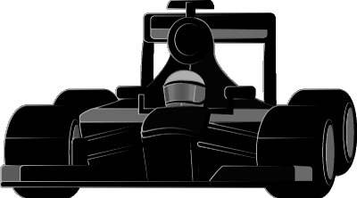
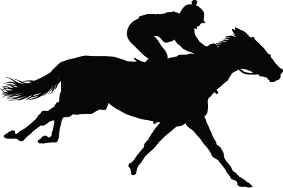

The Challenge - Ozobot: Track Race
 The Challenge
The Challenge
Complete the Triple Crown Challenge with Ozobot, a mini-robot that follows lines and color codes. Your challenge is to create three fun, fast tracks for Ozobot to speed through while doing turns, zig-zags, and more. When creating your paths, use a ruler to measure the distance lengths between points. Use a stopwatch to calculate the time it takes for the Ozobot to travel to each point. Then, use the ruler's measurements and stopwatch times to calculate the speed of your Ozobot.
What Does It Take to Be the Fastest?
You have probably heard of car races like the Indy 500 and horse races like the Kentucky Derby. What if there were robot races?
Just like in a car or horse race, there is a lot you would need to think about if you want to win.
Race Car: The driver, race car, engine, pit crew, coach, and training program are just some factors that play an important role in winning an auto race.
Horse: A horse’s breed, age, diet, and health affect a horse’s ability to win. The jockey, trainer, and training program are also very important factors.
Robot: What factors affect a robot race? Your challenge is to figure this out for yourself.
 
Can You Win the Triple Crown?
A horse has to win all three of the most popular horse races to earn the Triple Crown. In the U.S., only 12 horses have done it in the past 100 years.
Can you beat all three challenges to win the Ozobot Triple Crown?
Challenges
- Fun Run - Use a ruler to design a fun path with five or more intervals. For example, point A to point B on your path is one interval.
- Speed Test - See how fast you can get to the finish! Measure Ozobot’s speed in seconds.
- Time Trial - How many commands can Ozobot do in 60 seconds?
What I'll Learn
- I CAN describe different types of machines.
- I CAN program a robot to complete a specific task.
- I CAN use addition, subtraction, multiplication, and division to solve problems involving distance and intervals of time.
- I CAN express measurements given in a larger unit in terms of a smaller unit and smaller units in terms of larger units.
- I CAN represent quantities using diagrams that feature a measurement scale.